SceneFlow Guidev1.1 · 2026-07-23
How SceneFlow editing is structured, and how to model common interaction patterns
Overview
A SceneFlow is a hierarchical state machine — the control logic that decides when a scene plays, which branch to take, and how long to wait, react, or run things in parallel. It's built from nodes (states) connected by edges (transitions), grouped into nested supernodes where useful. SceneScript (the dialogue text — see the SceneScript Guide) supplies what gets said; SceneFlow decides when.
doc/DesignPatterns project ships with this
repository and is a real, loadable VSM project — every pattern screenshot on this page (waiting,
branching, parallel launches, reacting to events) is a runnable node group inside it. Open it in
the editor and step through each labeled region on the canvas.
Canvas & panels
The SceneFlow editor has three regions (screenshots below from the ExampleProject):
Blocks (left)
Drag or click to create nodes, supernodes, comments, and edges. Below that: the project's configured Agents and available Scenes.
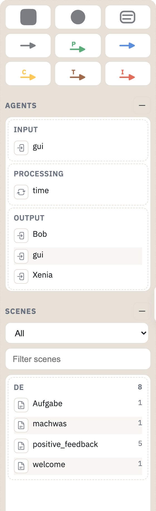
ExampleProject — the shapes/edges palette, then its Agents (gui, time, Bob, Xenia) and Scenes lists.
Canvas (center)
The graph itself — click a node/edge to select it, drag to reposition, double-click a supernode to step into it (breadcrumbs at the top track your path back out).
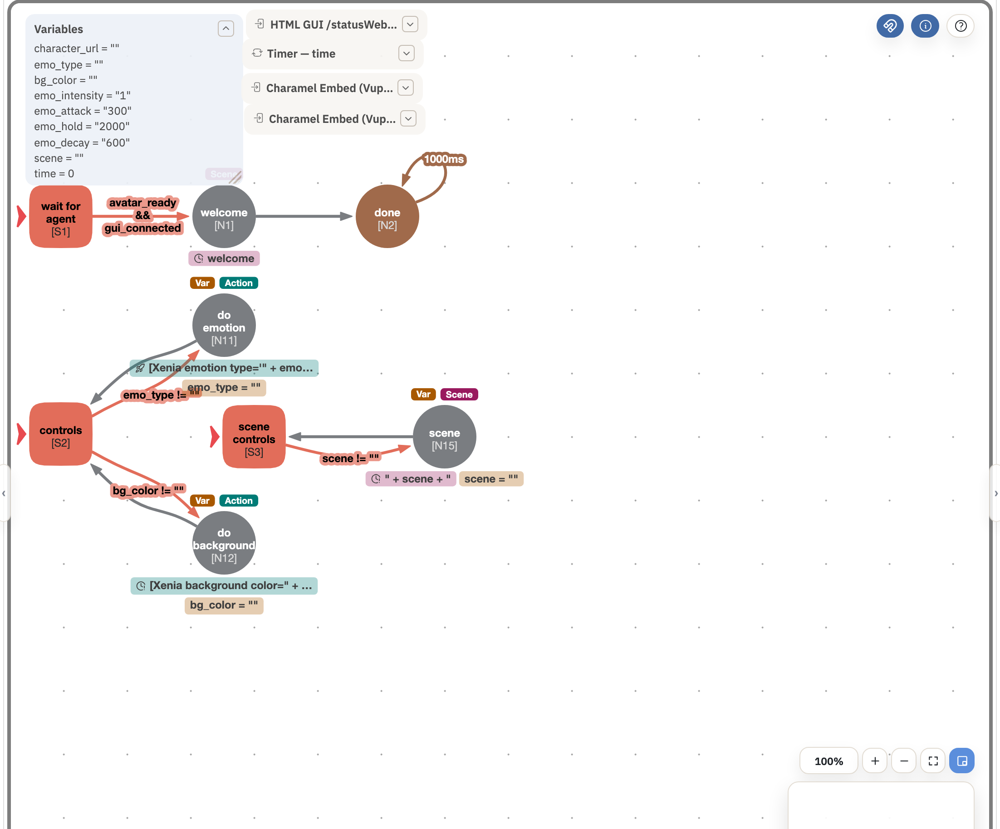
ExampleProject's root chart: three supernodes (red — each a declared start node, marked by the red triangle), plain nodes (gray/brown), an e-edge, a t-edge self-loop, and several i-edges with their conditions labeled.
Inspector (right)
Details for the current selection, or — with nothing selected — the current chart's start nodes, type definitions, and variables, each editable with Apply/Reset.
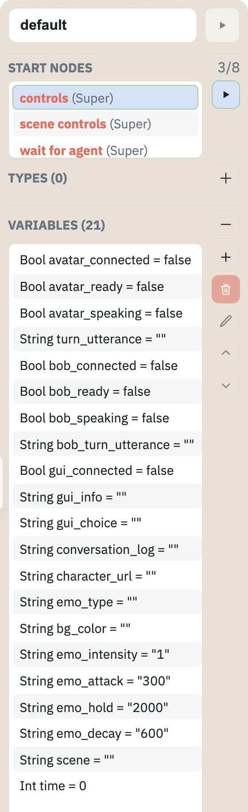
ExampleProject — 3 of its 8 declared start nodes, no custom types, and its 21 global variables.
Canvas toolbar (top of the graph): Toggle node snap (magnet icon — snaps dragged nodes to a grid) and Toggle info overlays (circled i — shows or hides the small colored command badges on nodes, see Commands below). This guide's own button sits right beside them.
Nodes & supernodes
Three shapes appear on the canvas and in the blocks palette:
| Shape | Meaning |
|---|---|
| Node | A basic state. Can carry commands (see Commands) and outgoing edges. |
| Supernode | A node that contains its own nested sub-chart (own nodes, edges, and optionally its own local variables). Double-click to step inside; breadcrumbs at the top of the canvas track the path back to the root. |
| Comment | Free-floating annotation text on the canvas — not part of the runtime logic at all. doc/DesignPatterns uses these extensively to label each example region (visible in every pattern screenshot below). |
Start nodes & history
Every chart (the root SceneFlow, or any supernode) can declare one or more start
nodes — every one of them launches the moment that chart becomes active, each as its
own independent thread of execution. A start node or supernode is marked with a small red
triangle
at its left edge — visible on wait for agent, controls, and
scene controls in the canvas screenshot above.
A supernode can also have exactly one History node: re-entering the supernode through it resumes whichever child was last active there, instead of running the start nodes again from scratch.
Edges
An edge is a transition from one node to another. VSM has six edge types, distinguished by color everywhere in the editor (palette, canvas, and this guide):
| Edge | Fires when… | |
|---|---|---|
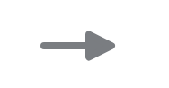 |
E | Epsilon (unconditional) — fires immediately, no condition. The default "just go to the next node" edge. |
| P | Probabilistic — fires by chance. Give each outgoing p-edge a probability (e.g. three edges at 33/33/33 for a random three-way split); VSM normalizes them. | |
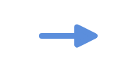 |
F | Fork — launches a new, independent, concurrent thread at the target, without stopping the source's own thread. Several f-edges from one node start several parallel branches at once. See Parallel sub-flows. |
| C | Conditional — fires when its boolean expression is true. Checked when the source node is (re-)entered — a deferred check, not a continuous one (see Reacting to events). | |
| T | Timeout — fires after a delay: a fixed number of ms, a random range (min–max), or a variable holding the ms value. The core building block for "wait, then continue." | |
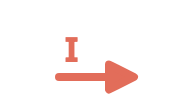 |
I | Interrupt — evaluated continuously, not just when a node is (re-)entered. The instant its condition is true, it preemptively aborts whatever is currently running (the action(s) involved must be built to be interruptible) and jumps to the target immediately. |
Agents & scenes
An agent is a name bound to a plugin instance ("device") in the project
config — the same name used as a command's actor prefix
([<agent>: command ...] in SceneScript, or as the actor of a PlayAction).
doc/DesignPatterns configures one: an agent named timer bound to the
Timer plugin's executor, used throughout its waiting/timing examples
([timer init id=one], [timer time id=one var=time]).
A scene is a named block of dialogue authored in SceneScript
(scene <lang> <name>) and triggered from SceneFlow via a node's
PlayScene command. The Blocks panel's Scenes list (filterable, grouped by
language) shows every scene defined in the project's SceneScript.
Variables
Declared per chart — the root SceneFlow (global, visible everywhere) or a supernode (local, visible to it and its own children only). Both scopes are edited the same way, shown on-canvas as small variable badges, and listed in the Inspector's Variables section (see the screenshot under Canvas & panels above). Double-click a variable there (or use the + to add a new one) to open its editor:
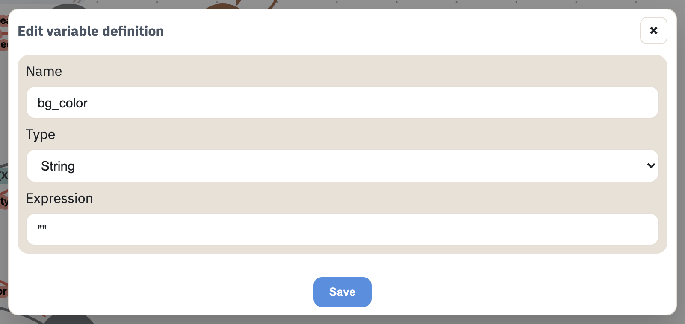
ExampleProject — editing bg_color, a String variable used to carry the requested background color into an inline command (see Commands below).
Common types: Bool, Int, String, and Event
(a typed slot fed by something outside the flow itself — e.g. an incoming signal like a button
press — commonly the condition an i-edge watches).
Commands
A node can carry commands, run once when the node is entered. In compact/info view (the circled-i toggle) each shows as a small colored pill on the node:
| Badge | Command | Does |
|---|---|---|
| Var | Assignment | Sets a variable, e.g. cnt = cnt + 1. |
| Scene | PlayScene | Plays a SceneScript scene by name — the bridge from SceneFlow to actual dialogue. |
| Action | PlayAction | Fires a single agent command directly (the same syntax as an inline SceneScript action, e.g. [timer init id=one]), without needing a scene at all. |
Click a node's command badge (or select the node and use the Inspector's Commands list) to open its editor — schema-driven from the target agent's own declared commands, so every field below is generated from the plugin, not hand-typed:
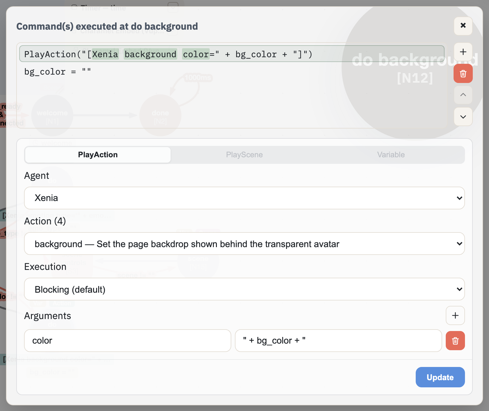
ExampleProject — the do background node's PlayAction command: agent Xenia, action background, with its color argument bound to the bg_color variable ("[Xenia background color=" + bg_color + "]") — the exact variable edited above.
Parallel sub-flows
Two ways a SceneFlow runs more than one thing at once:
- Multiple start nodes on the same chart — every one launches immediately and independently the moment that chart activates. The root SceneFlow can have as many as needed, each its own concurrent branch from the very start.
- F-edges mid-flow — one node forks off into several new concurrent branches without stopping its own thread (see Launching parallel work below).
Pattern: waiting
A t-edge is the simplest "pause, then continue" — fixed duration, a random range, or a duration read from a variable:
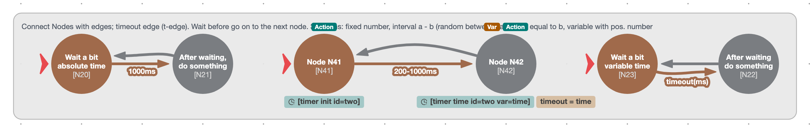
doc/DesignPatterns — fixed 1000ms; a random 200–1000ms range (paired here with the Timer plugin's own init/time commands to measure the actual elapsed wait); and a wait read from the timeout variable.
Pattern: branching
By condition (if / then / else): several c-edges checked in order, with a plain e-edge as the "none matched" fallback — and, when a condition might never become true, a t-edge as a "nothing matched in time" fallback instead:
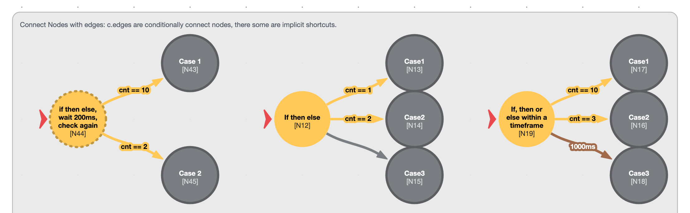
doc/DesignPatterns — plain if/then/else (fallback: e-edge to Case3), and the timeframe variant (fallback: t-edge to Case3 after 1000ms).
By probability: p-edges instead of c-edges, each carrying its own share:
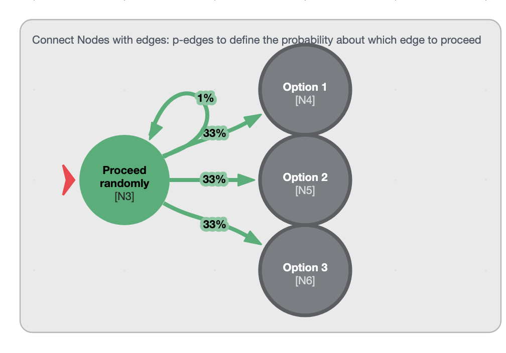
doc/DesignPatterns — three 33% p-edges to three options, plus a fourth 1% p-edge back to itself.
doc/DesignPatterns. That extra 1% self-loop is a cheap way
to occasionally re-roll instead of only ever landing on exactly one of three fixed options.
Pattern: launching parallel work
One node, several f-edges — each target starts running immediately and independently:
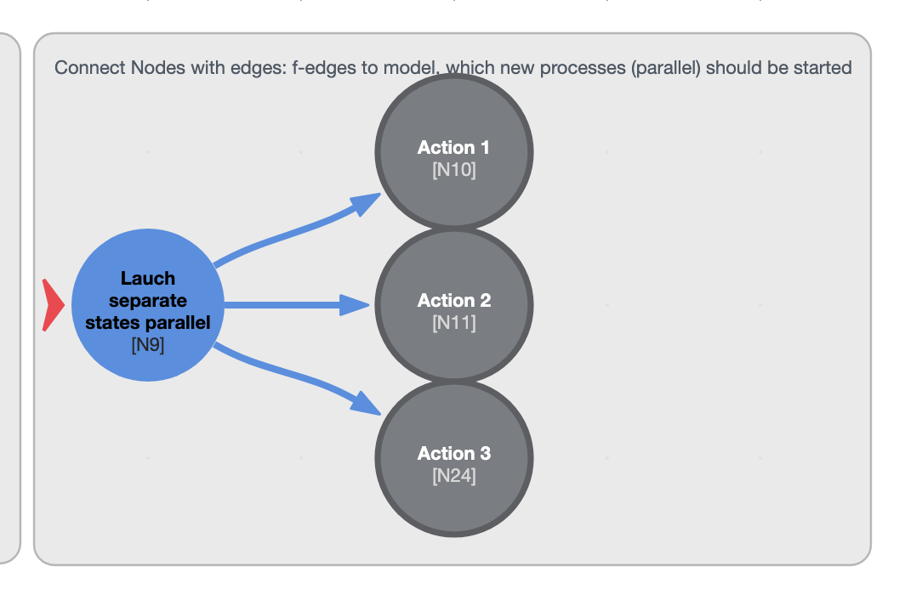
doc/DesignPatterns — one f-edge per parallel action, all three launched at once.
Pattern: reacting to events
The same goal — "react once a variable/event changes" — realized three ways, worst to best
(all three exist side by side in doc/DesignPatterns for direct comparison):
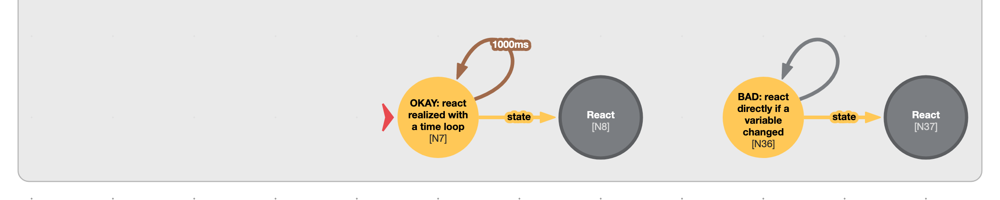
doc/DesignPatterns — OKAY (left): a t-edge self-loop (1000ms) plus a c-edge check. BAD (right): an e-edge self-loop plus a c-edge check.
The e-edge self-loop re-enters instantly with no delay at all, so the condition is re-evaluated as fast as the interpreter can cycle. Correct, but burns CPU for no benefit.
Far cheaper, but reaction now lags by up to one whole loop interval — a real button press might sit unnoticed for up to a second.
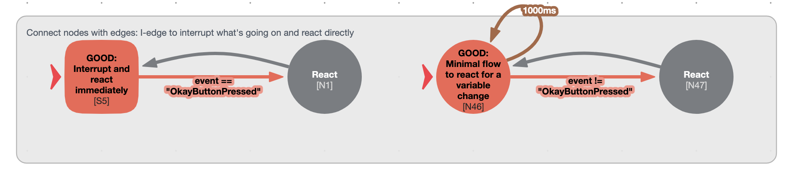
doc/DesignPatterns — GOOD, two forms: an i-edge on a supernode itself (left, interrupting whatever is running inside it), and directly on a node (right).
No polling loop at all. The instant the i-edge's condition (e.g. an incoming Event variable matching a button-press signal) becomes true, it preemptively interrupts whatever's running and reacts right away.